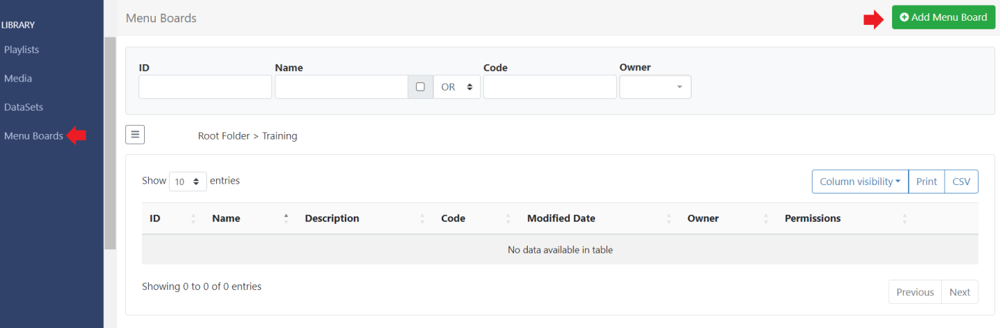
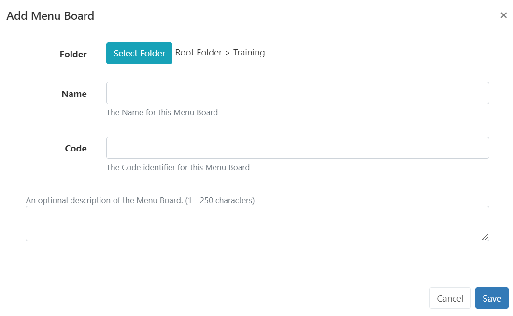
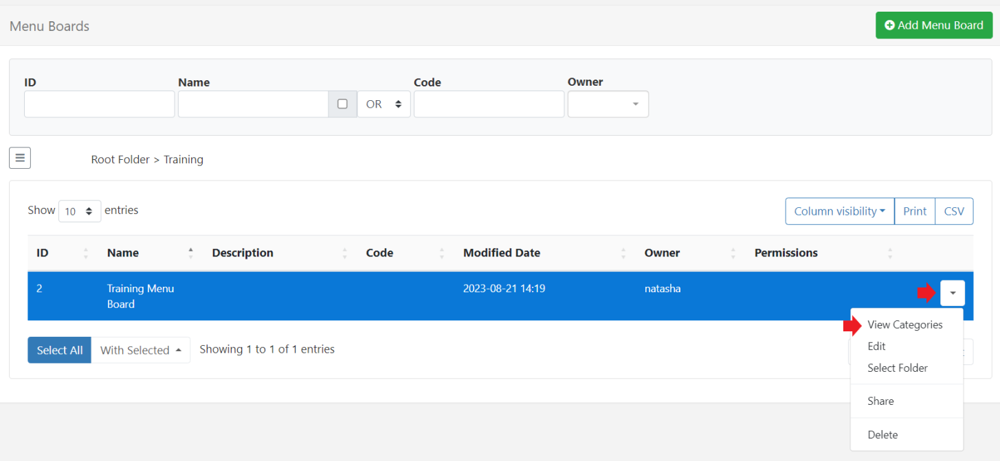
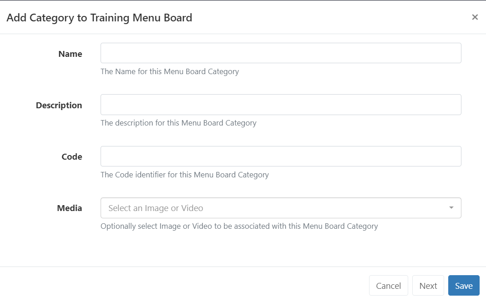
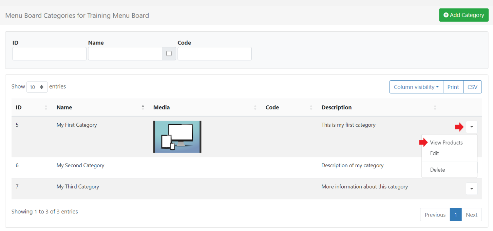
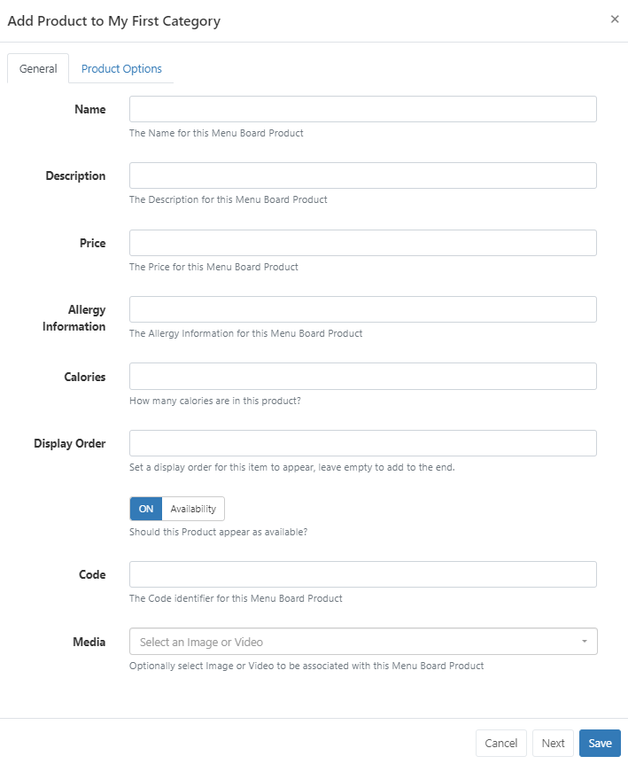
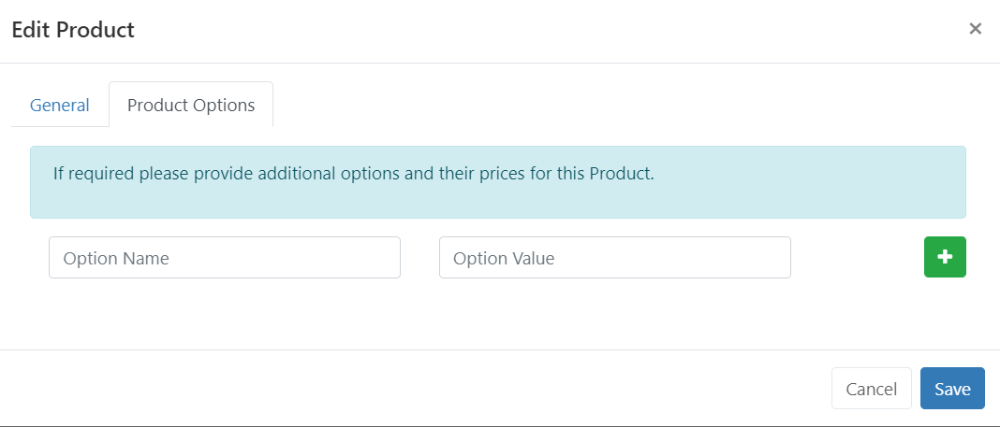
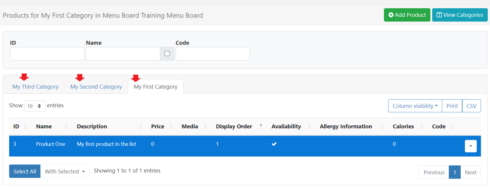

Menu Boards
The Menu Boards interface provides a simple way for users to create and manage ‘categories’ and ‘product’ information independently to Layouts. Once created, Menu Board data can be added anywhere on a Layout using Elements from the Menu Board: Category and Menu Board: Products Widgets available in the Layout Editor.
Feature Overview
- Create and define Categories.
- Include detailed product information.
- Select Images to use from your Library.
- Maintain content without accessing Layouts.
- Re-use across multiple Widgets/Layouts.
Menu Boards are created and managed independently to Layouts and therefore do not require user access to Layouts or the Layout Editor to add or manage categories/product data held within a Menu Board.
Creating a Menu Board
Menu Boards are created and managed by selecting Menu Boards under the Library section of the main CMS menu:

- Select the Add Menu Board button and complete the form fields to create a new record:

Folders are used to organise, search and easily Share User objects with other Users/User Groups. DataSets saved to a Folder will inherit the access options applied to that Folder.
-
Give your Menu Board a Name for easy identification in the CMS. Provide an optional internal Description and enter a Code if referencing this Menu Board via the API.
-
Click to Save.
Create and Configure Categories
Categories define the structure of your data:
- Use the row menu for a Menu Board record and select View Categories.

Click on the Add Category button and complete the required form fields:

Code is for advanced use when referencing the API.
- Click Next to repeat this process to add the required Categories for the Menu Board.
- Select Save when entering the last Category to use.
Add Products
Product data is added to Categories to provide all key information which can be selected to be shown on Displays.
- Use the row menu for a Category and select View Products:

- Create new Product data by clicking the Add Product button and complete all relevant form fields:

The Menu Boards: Products Widget can be configured to dim products that are marked as unavailable to show on Displays!
Product Options
Use this tab to provide further product options:

Use Options to provide special offers, limited deals etc for this particular product.
- Repeat the process to add further Products/Product Options to the Category.
Each Category will be shown as a separate tab on the Product grid so you can easily switch between Categories to add and edit product information!

Click on View Categories to go back to the Categories grid to view and edit existing using the row menu or Add Category.
Menu Board data is added to Layouts using the Menu Board: Category Widget which has data elements which are primarily used to add ‘header’ information and the Menu Board: Products Widget which allows for precise placement of Product details on Layouts.
Menu Boards are edited independently to Layouts, so there is no need to access or edit the Layout(s) the Menu Board has been added to. Changes will be available in the system straight away ready to be picked up by Players on their next collection, with no need to make any edits to Layouts!